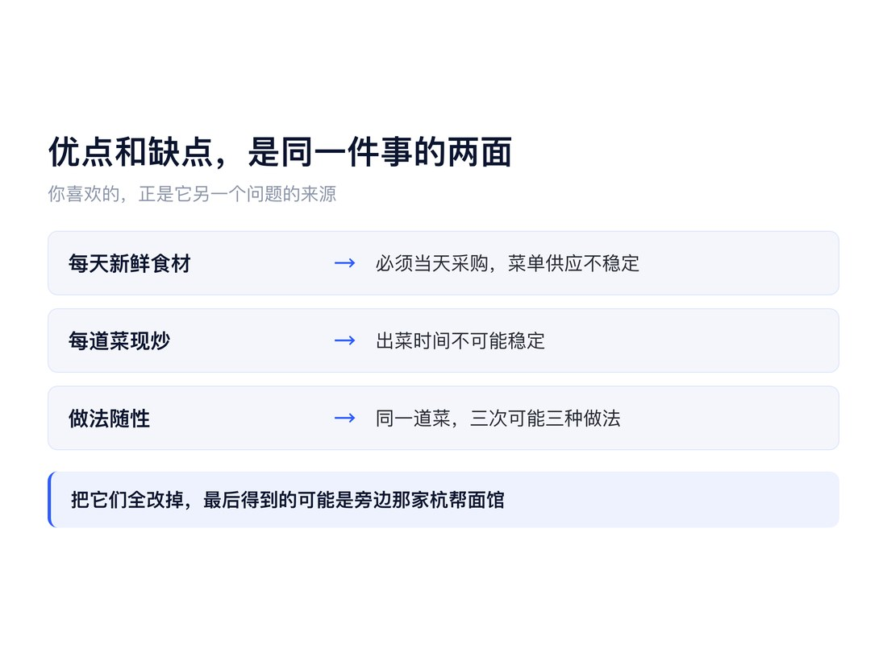
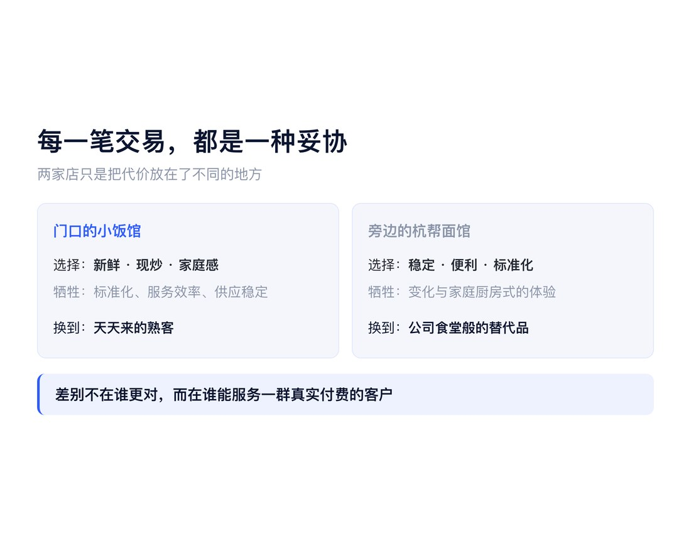
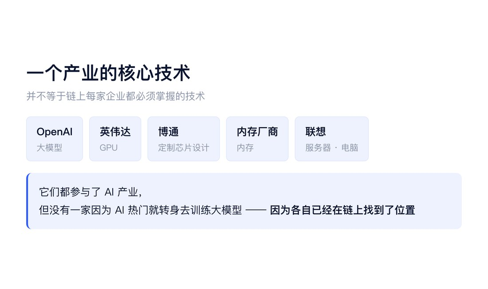
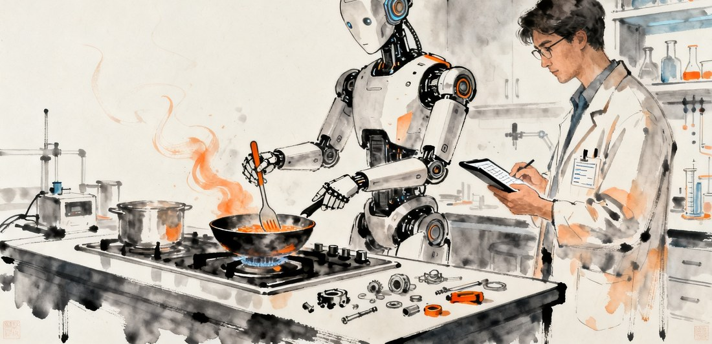
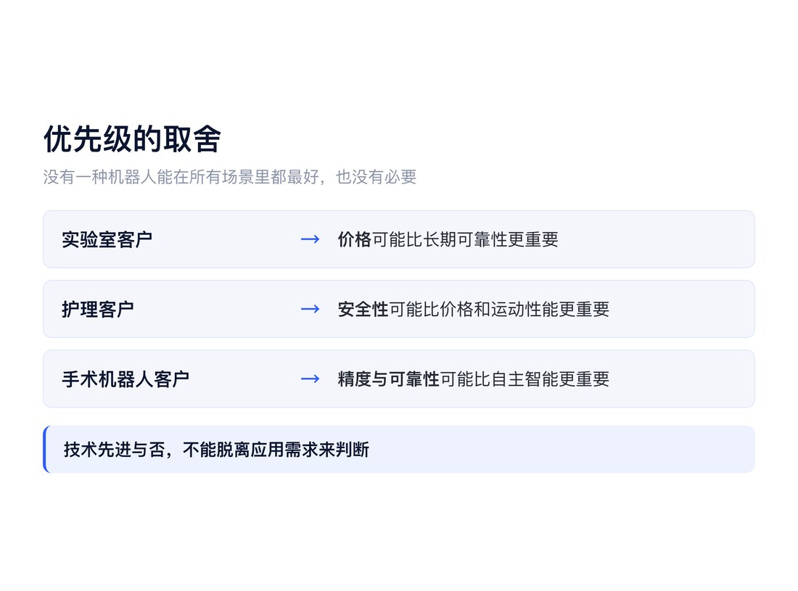
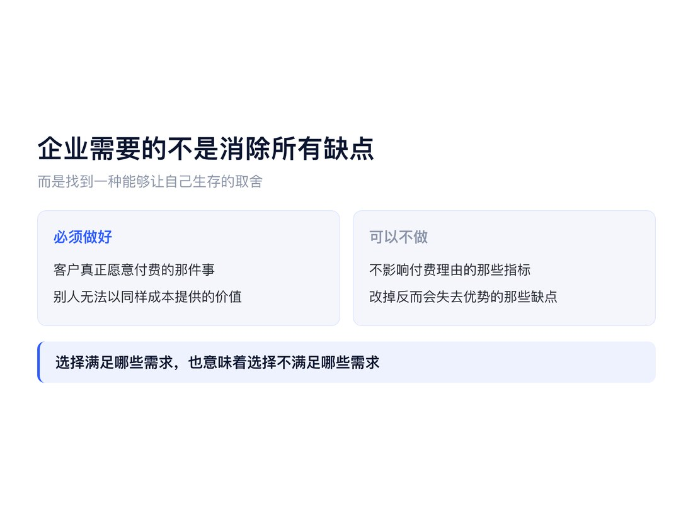

● ● ●
一、门口的小饭馆
我家门口有一家小饭馆，做小炒的。
这家饭馆的环境，突出一个简陋。服务也很不稳定。
比如墙上的菜单，写着几十道菜，但你点了以后，可能有，也可能没有。有时候老板听你点完菜，还要跑到菜市场去现买。买到了就有，买不到就没有。
更有意思的是，同一道菜，你点三次，可能吃到三种不同的做法。
有时候放小辣椒，有时候放辣椒酱；有时候配菜是韭菜，有时候又换成了豆干。老板似乎也没有什么固定的菜谱，今天买到什么，就用什么炒。
就是这么一家小饭馆。
但是，它的生意却是附近最好的。
原因也很简单。它的食材都是当天买的，菜都是现烧的。
而且很多顾客觉得，这种环境更像回家吃饭。家里人炒菜，家里人端盘子，有时候忙不过来，还得自己去拿。
其实家里烧菜不也是这样吗？买到什么，就烧什么。今天有韭菜，就放韭菜；明天买了豆干，就放豆干。没有那么多标准，也不会每天按照菜谱严格执行。
这家小饭馆的旁边，还有几家看起来更专业的店，比如杭帮面、沙县小吃和拉面馆。
它们的环境更好，服务更规范，菜品也更标准化。今天来吃和明天来吃，味道基本一样。
但老实说，它们和别的同类店也差不多。
所以，生意反而比较冷清。
对于许多顾客来说，到这样的店里吃饭，和在公司食堂吃饭、点一份外卖，其实没有太大区别。更多时候，只是中午在公司吃腻了，出来换个口味。
而那家小饭馆呢？
顾客经常一边吃，一边抱怨。
“老板，你今天这个菜有点咸啊！”
“老板，再给我找个碗！”
老板可能根本没听见，只顾着冲后厨喊：
“再烧个XXX，不放辣椒！”
整个场面有点混乱，谈不上什么专业服务。
但奇怪的是，顾客天天批评，第二天却还会再来。
他们宁愿天天抱怨这家小饭馆，也不愿意去旁边那家味道永远一样、服务更加标准化的杭帮面馆。
这让我想到一个反直觉的问题：
一家企业的缺点，会不会恰恰是它的优点的一部分？
● ● ●
二、优点和缺点，可能是同一件事的两面
仔细想想，这家小饭馆的缺点，其实和它的优点密不可分。
你希望它每天都用新鲜食材，那老板就必须当天采购。
但老板又不能决定菜市场今天有什么，也不知道顾客今天想点什么。
如果提前把菜单上的食材全部备齐，万一卖不出去，第二天接着卖，那就不再是每天新鲜采购了。
所以，菜单供应不稳定，某种程度上正是食材新鲜的代价。
你希望每道菜都现炒，那么出菜时间自然不可能稳定。
有的菜切配麻烦，有的菜需要等火候，有的菜三五分钟就能出锅，有的菜可能要等十几分钟。
如果把所有菜提前加工好，甚至做成半成品，出菜速度当然会提高，但它也就不再是原来那家小饭馆了。
至于做法不一致，就更容易理解了。
老板每天买到什么，就用什么搭配。今天的小辣椒新鲜，就用小辣椒；明天买到了豆干，就换成豆干。
这不正是家庭厨房的特点吗？
我们喜欢它的随意，却又抱怨它不够标准；喜欢它的现炒，却又抱怨它出菜太慢；喜欢它的新鲜，却又抱怨菜单上的菜不一定有。
其实，很多时候，优点和缺点并不是两件独立的事，而是同一种经营方式的两个方面。

当然，这并不意味着这些问题不存在。
恰恰相反，这家小饭馆的问题非常明显，改进方法也几乎都是现成的。
做一套标准菜谱，统一采购，规范库存，培训服务员，改进出菜流程，建立标准化管理制度。
任何一个稍微懂点餐饮管理的人，都能提出一大堆建议。
问题是：到底应不应该改？
我们很容易看到改进能带来什么，却不清楚改进之后会失去什么。
有些问题当然可以独立解决，比如把碗筷放在方便顾客拿取的位置，并不会影响菜品的新鲜。
但是，有些问题恰恰来自企业创造价值的方式。
如果把这些问题也一并消除了，最后可能得到一家管理规范、供应稳定、出菜迅速的饭馆。
只不过，它可能就变成了旁边那家杭帮面馆。
这又让我想到另一个令人困惑的地方。
人人都能指出一家饭馆的问题，人人都能提出改进方案，但并不是人人开一家饭馆，都能让顾客上门。
指出问题是一种能力，改进管理是一种能力，而创造出顾客真正愿意购买的价值，是另一种能力。
如果开一家企业，我们究竟应该学那家标准化的杭帮面馆，还是学这家充满缺点的小饭馆？
● ● ●
三、每一笔交易，其实都是一种妥协
其实，仔细想想，这个道理也不复杂。
客户永远都希望得到完美的产品和完整的体验。
最好东西又好，又便宜；服务又周到，又及时；质量稳定，品种丰富，还能随时满足自己的特殊要求。
但现实中，并不存在完美的产品。
更重要的是，不同客户对产品的需求，优先级是不一样的。
有的人最在乎价格，有的人最在乎质量；有的人重视性能，有的人重视可靠性；有的人在乎服务，有的人则根本不在乎。
对于经常光顾那家小饭馆的顾客来说，食材新鲜、现炒现烧，可能比服务规范更加重要。
他们当然也希望老板态度好一点，出菜快一点，菜单上的菜每天都有。
但如果为了实现这些要求，老板开始大量采购、统一加工、提前备菜，那么他们可能反而不愿意来了。
所以，顾客并不是不知道饭馆有缺点。
他们只是愿意为了自己更看重的东西，接受这些缺点。
现实中的每一笔交易，其实都是一种妥协。

顾客放弃了一部分要求，换取自己最需要的价值。
而企业也不必满足客户的所有要求。
它必须做的，是保证客户真正愿意付费的理由。
为了坚持这个理由，甚至需要要求客户牺牲一部分其他需求。
这才是商业中真正困难的地方。
因为企业不可能什么都做好，也不可能满足所有客户。
它必须决定，哪些事情一定要做好，哪些事情可以不那么好，甚至哪些客户的需求可以直接放弃。
正是在这种取舍之间，企业找到了自己在市场中的独特位置，也找到了生存的空间。
那家小饭馆选择了新鲜和现炒，牺牲了标准化和服务效率。
旁边的杭帮面馆选择了稳定、便利和标准化，牺牲了一部分变化和家庭厨房式的体验。
两种选择都不是天然错误的。
问题是，哪一种选择能够满足一群真实存在、愿意持续付费的客户。
因此，企业真正重要的能力，未必是把每件事情都做到最好，而是知道自己应该在哪些事情上做到最好。
而这种取舍，不仅决定产品的特点，也决定了企业在产业链中的位置。
这个问题，让我想到了宇树机器人。
● ● ●
四、人人都在批评宇树，但宇树究竟在卖什么？
我现在经常听到机器人行业的同行批评宇树。
有人说，我的电机比宇树好。
有人说，我的传感器比宇树先进。
还有人说，我的机器人运动性能更强，我们在机器人运动会上赢了宇树。
当然，还有一个更普遍的批评：
具身智能的核心是 AI，宇树为什么不把主要精力放在 AI 大模型上？
我自己过去也提出过类似的观点。
从国家技术战略的角度看，具身智能的核心竞争力，最终很可能来自 AI，而不仅仅是传统机械制造和供应链。
宇树目前展示出来的很多优势，更像是中国传统制造业和供应链优势在机器人领域的延续。
但我同时也说过，这是国家产业战略层面的问题，未必是创业者应该承担的责任。
对一家创业公司来说，标准其实可以很简单。
产品卖出去了，公司赚到钱了，员工工资发出来了，税交了，投资人的钱没有打水漂。
那么，作为一家企业，它就已经取得了商业上的成功。
我们不能要求每一家企业都承担推动整个行业技术进步的使命。
所以，评价宇树，我觉得首先需要理解几个问题：
宇树为什么选择现在的技术路线？
为什么它的机器人能卖出去？
客户究竟想买什么？
以及，宇树自己究竟想要什么？
在回答这些问题之前，仅仅指出宇树的哪些技术不够先进，可能并没有太大意义。
因为我们还没有弄清楚它在做什么生意。
● ● ●
五、一家企业不必承担整个产业的发展
这涉及企业在产业链中的定位问题。
以 AI 产业为例。
OpenAI 做大模型，英伟达提供 GPU，博通参与定制芯片设计，还有公司提供内存，联想则生产服务器和电脑。
这些公司都参与了 AI 产业，但它们并不都在研究 AI 大模型。
事实上，很多公司只是继续做自己原来擅长的事情。
做内存的，继续做内存。
做芯片的，继续做芯片。
做服务器的，继续做服务器。
它们没有因为 AI 成为热门产业，就纷纷转型去训练大模型。
为什么？
因为它们已经在产业链中找到了自己的位置。
一家内存厂商，不需要负责推动大模型算法的发展。它只需要根据市场需求，把内存的容量、带宽、性能和成本做好。
大模型如何进化，是模型公司的事情。
算力架构如何发展，是相关芯片和系统公司的事情。
当然，它们需要理解这些技术变化，因为这些变化会影响自己的产品需求。
但理解产业的发展，并不意味着必须亲自去做产业中的每一件事。
一个产业的核心技术，并不等于产业链中每家企业都必须掌握的技术。

回到宇树。
宇树原来做四足机器狗，现在做人形机器人。产品形态发生了变化，也进入了一个新的产业领域。
但从它的技术积累和制造优势来看，电机、减速器、运动控制、机械设计和整机集成，仍然是它重要的能力基础。
客户购买宇树的机器人，某种程度上就是购买一套已经集成好的机器人硬件系统。
如果自己采购电机、减速器、传感器，再设计机械结构、开发控制系统、组装调试，成本可能更高，效果还未必更好。
那么，直接买宇树的整机，有什么不好？
对宇树来说，它已经找到了进入人形机器人产业的入口，也初步找到了自己在产业链中的位置。
只要未来人形机器人产业继续发展，它就有机会参与这个产业的价值分配。
找到产业入口，占据产业链中的位置，获得未来的价值分配机会。
对于一家企业而言，这已经是一件非常重要的事情。
至于人形机器人产业未来究竟能发展到多大，什么时候能够进入家庭，什么时候能够进工厂，又需要什么样的 AI，那是整个行业需要探索的问题。
不是宇树一家公司必须回答的。
就像一家卖内存的企业，不必自己去研究大模型。
在我看来，一家企业最重要的，未必是推动整个产业的发展，而是在一个产业崛起的时候，凭借自己的能力获得其中的一部分市场。
尤其危险的，是为了追赶产业热点，放弃自己擅长的事情，转而投入自己并不擅长的领域。
● ● ●
六、客户买的不是 AI，而是一次便宜的可行性测试
我觉得，理解宇树还有一个特别重要的问题：
人形机器人现在究竟处在什么商业阶段？
很多同行在讨论，谁的电机更强，谁的传感器更好，谁的运动性能更先进。
但他们可能忽略了一件事。
目前，人形机器人在许多潜在应用领域，仍然处于验证可行性的阶段，而不是成熟产品之间竞争性能的阶段。
假设我要买一台人形机器人，研究它能不能做饭。
我现在最关心的是什么？
并不是哪家机器人的电机扭矩大了百分之十，或者关节响应速度快了多少。
我首先想知道：
人形机器人到底能不能做饭？距离真正能做饭还有多远？主要障碍究竟在哪里？
如果发现某些问题只是硬件性能不够，那么问题相对简单。
电机不够强，可以换电机。
传感器精度不够，可以换传感器。
灵巧手不够好，可以定制灵巧手。
但如果经过研究，发现某个关键问题涉及原理上的障碍，甚至这条技术路线根本不适合完成这类任务，那么项目可能就要放弃。
所以，我买这台机器人，不是为了得到一台已经可以为我做饭的产品。
而是为了做一次可行性测试。
实验做完了，机器人可能就放在实验室里，不再使用。
接下来，我才决定要不要继续投入，甚至要不要进入这个赛道。
这和购买一台成熟的工业设备，是两种完全不同的需求。
成熟市场中的客户，通常知道自己要什么。
比如，客户知道需要什么精度、什么速度、什么可靠性，愿意支付多少钱，需要采购多少台。
但在一个应用尚未成熟的市场中，客户可能连真正的技术障碍是什么都不知道。
我们常常听到这样的说法：
如果人形机器人能够叠衣服，就会有几百万家庭购买。
如果能够做饭，就会有多少家庭愿意付钱。
但这些更多还是对潜在市场的设想。
并没有大量客户真正拿出订单，明确表示：
只要你的机器人达到某个智能水平，我就花一百万元买一台，一次采购一万台。
连应用场景和付费需求都没有验证，怎么知道应该把机器人优化到什么程度？
更重要的是，很多同行似乎没有意识到，现阶段不少客户购买机器人，根本不是为了使用成熟产品，而是为了探索这个产品是否可能存在。
这也是为什么，我觉得很多针对宇树的批评，可能没有理解客户的需求。
人人都在批评宇树的 AI 不够好。
但买宇树机器人的客户可能很清楚：
我买的本来就不是 AI，我买的是电机、减速器，以及一套已经组装好的机器人硬件。
我买回来，是为了做实验，验证自己的想法。
而且，价格便宜。
实验中摔倒了，碰坏了，甚至最后整台机器人报废了，也不至于太心疼。
这对于技术探索来说，是一件非常重要的事情。
因为探索本身就意味着不确定性，意味着失败，也意味着设备可能损坏。
如果每次实验都要担心损坏一台昂贵的机器人，那么研究的成本就会大大增加。
对于许多研发团队来说，设备采购门槛的降低，本身就是很有价值的。
批评者在比较 AI 的先进程度，而购买者在计算探索的成本。

两者可能根本不是在讨论同一件事。
这里又回到了前面关于交易与妥协的问题。
客户当然希望机器人更聪明，电机更强，传感器更先进，而且价格更便宜。
但如果它只是要验证一个想法，那么这些性能究竟值多少钱？
为了更先进的 AI，多付几十万元，值得吗？
为了更好的电机和传感器，把实验平台的成本提高一倍，值得吗？
对于某些客户，答案可能是肯定的。
但对于另一些客户，他们宁愿牺牲一部分性能，也希望以最低的成本开始实验。
客户并不是不要先进技术，而是在他的需求优先级中，先进技术未必排在第一位。
宇树只要满足了这部分客户最重要的需求，就有机会形成自己的市场。
● ● ●
七、真正的技术障碍，只有进入应用场景后才知道
还有一点经常被忽略。
我们现在甚至不知道，人形机器人真正进入某些应用场景以后，最大的技术障碍究竟是什么。
比如护理。
我们知道，人形机器人能够走路、跑步、跳舞，甚至完成一些复杂的运动。
但是，人形机器人也可能摔倒。
在实验室里，机器人摔倒，可能只是一次失败的实验。
研究人员把它扶起来，检查一下电机和减速器，重新调试，再做一次实验就好了。
但如果进入养老护理场景呢？
机器人正在扶一位老人起床，或者搀扶一位行动不便的病人行走。
这时候，机器人突然摔倒，可能带来严重的人身伤害。
在实验室可以接受的故障，在护理场景中可能是绝对不能接受的。
那么，机器人在护理场景中的关键问题，可能首先不是 AI 有多聪明，而是能否确保运动稳定，以及失去平衡时能否保护被护理者。
这涉及机械结构、运动控制、冗余设计、故障检测，以及整个系统的安全架构。
AI 当然可以参与这些问题的解决，但智能水平的提高，并不自动意味着这些安全问题就能得到解决。
即使机器人拥有很强的语言理解和任务规划能力，它仍然可能因为一个执行器故障而摔倒。
这和它能不能理解护理任务，是两个不同的问题。
再比如手术机器人。
目前临床应用中的手术机器人，主要仍然由医生操作，并没有普遍实现全自主手术。
对于许多手术应用来说，客户首先关心的是精度、稳定性、可靠性，以及能否满足临床安全要求。
如果精度达不到要求，智能水平再高也没有意义。
反过来，如果一台机器人能够准确、可靠地帮助医生完成操作，即使它没有先进的大模型，也可能具有明确的临床价值。
所以，机器人应该具备什么能力，取决于它最终要完成什么任务。
而不是因为 AI 是行业热点，就认为所有机器人的核心问题都是 AI 不够先进。
在尚未明确应用场景之前，我们甚至无法判断哪些技术指标是最重要的。
一个电机扭矩增加百分之十，在某个应用里可能毫无意义，在另一个应用里却可能决定整个方案是否可行。
一个传感器精度提高一倍，在某些任务中可能只是锦上添花，在另一些任务中却可能是实现应用的必要条件。
技术先进与否，不能脱离应用需求来判断。
这也解释了为什么，现阶段许多客户更需要一台价格合理、功能完整的机器人平台。
他们需要先把机器人放进具体场景，搞清楚真正的问题在哪里。
如果障碍只是性能不足，那么以后可以针对性地升级。
如果障碍来自基本原理或无法满足的安全约束，那么继续投入可能根本没有意义。
先验证能不能做，再讨论怎样做得更好。
这才是可行性测试的逻辑。
● ● ●
八、宇树不必知道人形机器人未来会怎样
如果按照这个逻辑理解宇树，它的商业选择就容易理解了。
人形机器人未来能够发展到什么程度？不知道。
最终什么应用能够真正商业化？不知道。
人工智能需要发展到什么水平？也不知道。
甚至实现某些应用的最大障碍究竟是什么，现在也未必清楚。
但有一件事可以先做。
不管你们将来发现什么应用，最好都用我的硬件。
你要探索人形机器人做饭，可以买我的机器人。
你要研究机器人进工厂，也可以买我的机器人。
你要做人工智能、运动控制或者灵巧操作研究，同样可以买我的机器人。
我把硬件做好，把成本控制下来，把机器人卖给那些愿意探索未来的人。
宇树不需要替所有客户解决未来的问题，只需要提供一个价格合理、性能足够、方便开展实验的硬件平台。
客户拿去研究什么，研究出什么结果，最终会不会形成商业应用，是客户自己的事情。
而宇树先完成了销售。
这意味着，即使未来某些商业应用出现，宇树也未必一定要自己做最终的应用产品。
它可以继续卖机器人整机，也可以卖电机、关节模组或其他硬件。
未来如果家庭机器人真正形成市场，需要新的关节结构、更轻的机械臂、更安全的驱动系统，它再根据真实需求改进硬件。
企业并不需要在今天就把十年后所有可能的应用都开发出来。
当然，还有另一种可能。
假如有一天，人形机器人的 AI 技术成熟了，而且像今天的操作系统一样，变成整个产业都能够使用的通用技术。
那么，宇树只需要把硬件做好，再接入成熟的 AI 系统，就可能形成完整的商业产品。
就像联想生产电脑，安装微软的 Windows，而不需要自己开发 Windows。
这有什么问题呢？
对于一家电脑制造商来说，最重要的不一定是自己掌握操作系统，而是能否提供客户愿意购买的电脑。
同样，对于一家机器人公司来说，最重要的也未必是自己研发最先进的大模型，而是能否提供市场真正需要的机器人产品。
只要产业形成了合理分工，企业就可以通过合作获得自己缺少的技术。
这并不是说宇树完全不研究 AI，而是说它不一定需要把通用大模型作为公司的核心业务。
除非它相信自己拥有一条真正不同于同行、而且可能超越现有技术的新路线。
否则，仅仅因为所有人都在做大模型，就投入大量资源去重复别人正在做的事情，商业意义未必很大。
● ● ●
九、什么样的研究，才值得企业自己去做？
当然，这并不意味着机器人公司不应该研究人工智能。
我认为企业自己做研究，有一种特别重要的价值。
那就是凭借自己对某个领域的深刻理解，提出其他人没有想到的新技术路线。
比如，我曾经提出过一个名为 Society of Agents 的机器人智能架构设想。
这个方向的出发点，并不是简单地把现有大模型做得更大，而是从机器人本体、感知和运动控制的特点出发，重新思考智能系统应该如何组织。
视觉、触觉、运动控制和高层规划，可能有不同的时间尺度、不同的计算要求，也应该承担不同的任务。
高层智能负责理解目标和规划，低层控制负责快速响应物理世界中的变化。不同能力之间通过明确的接口协作，而不必由一个统一的大模型承担所有计算。
这类探索的价值，在于它来自对机器人自身的理解，而不仅仅是对现有 AI 技术路线的跟随。
如果一家机器人企业拥有别人不具备的硬件知识、控制经验和真实物理世界的数据，那么它就可能从这些独特的知识出发，找到新的智能技术路线。
但这里又有一个有趣的矛盾。
如果一条技术路线真的足够新颖，它往往既有很大的技术风险，也未必符合行业共识。
既然不是行业共识，就未必容易获得资本市场的理解。
大家都在做的事情，比较容易讲故事；真正与众不同的研究，反而可能很难讲清楚。
而且，如果一家公司真的发现了某条具有潜在竞争优势的技术路线，它也未必愿意公开。
所以，外界看到一家企业没有高调宣传某项技术，并不能证明它没有相关研究。
当然，也不能反过来据此认定它一定掌握了什么秘密技术。
我们只是需要承认：从公开信息中看到的企业技术路线，并不一定等于企业内部所有的技术探索。
对于宇树来说，是否应该投入更多资源做 AI，最终仍然取决于它如何判断自身的优势，以及研究能够给它带来什么独特价值。
仅仅因为具身智能是热门方向，就认为每一家机器人公司都应该成为大模型公司，我觉得没有太大必要。
● ● ●
十、企业的独特位置，来自取舍，而不是完美
说到这里，我又想起家门口那家小饭馆。
我们每个人都可以给它提出一大堆改进建议。
应该规范采购。
应该统一菜谱。
应该改善服务。
应该提高出菜效率。
这些建议可能都很合理。
但我们不能仅仅因为看到了问题，就认定解决这些问题一定能让企业变得更好。
对于宇树也是一样。
你的电机不够先进，应该改进。
你的传感器不够好，应该升级。
你的 AI 不够强，应该投入更多资源研究大模型。
甚至，别人已经有了什么功能，你也应该尽快补上。
这些建议听起来都没有错。
但问题是，我们是否真正理解宇树的客户为什么购买它的机器人？又是否理解宇树自己希望在整个产业中扮演什么角色？
如果目前相当一部分客户购买机器人的目的，就是花尽可能少的钱做可行性测试，那么对于这些客户来说，便宜、可靠、基本功能完整，可能比某个技术指标领先更加重要。
如果宇树的优势来自已有的硬件研发、供应链和整机集成能力，那么盲目投入自己不具备优势的技术领域，也可能削弱原来的竞争力。
当然，电机更好、传感器更先进、AI 更强，都可能给客户创造新的价值。
但前提是，客户真的需要，而且愿意为这些提升付钱。
否则，技术上的改进并不必然带来商业上的成功。
其实，这又回到了商业交易最基本的逻辑。
客户希望产品尽可能完美，但现实中不存在完美的产品。
任何技术选择都有代价，任何资源投入都有机会成本。
一家公司不可能同时拥有最先进的 AI、最优秀的电机、最精密的传感器、最高的可靠性，以及最低的价格。
即使真的能够做到，成本也可能高到没有客户愿意购买。
所以，企业必须选择。
选择满足哪些需求，也意味着选择不满足哪些需求。
更重要的是，它必须知道客户愿意为了什么付钱，又愿意为了这个价值放弃什么。
对于实验室客户，价格可能比长期可靠性更重要。
对于护理客户，安全性可能比价格和运动性能更重要。
对于手术机器人客户，精度和可靠性可能比自主智能更重要。

没有一种机器人可以在所有场景中都是最好的。
也没有必要。
企业并不是通过满足所有客户的所有需求获得竞争优势，而是通过对需求的取舍，找到一群自己能够服务得最好的客户。
这种取舍，既决定产品，也决定企业在产业链中的位置。
有的企业做模型，有的做芯片，有的做电机，有的做整机。
各自放弃一部分机会，换取自己在某个位置上的竞争力。
因此，我越来越觉得，评价一家企业，不能只看它做得不够好的地方。
理解一家企业为什么能够赚钱，往往比指出它有哪些问题更重要。
尤其是当一家企业已经找到了自己的客户和产业定位时，我们更应该小心。
因为有时候，它那些令人不满意的地方，恰恰与它的竞争优势来自同一个经营逻辑。
并不是所有问题都不应该改。
但我们至少应该先问清楚：
这个问题为什么会出现？
它和企业的优势有没有关系？
如果把它改掉，会得到什么？
又会失去什么？
企业真正需要的，不是消除所有缺点，而是找到一种能够让自己生存的取舍。

● ● ●
十一、回到门口的小饭馆
我并不是认为宇树没有缺点，也不是认为家门口的小饭馆不需要改善服务。
我只是觉得，我们在评价企业的时候，常常犯一个错误。
我们把企业看成一台机器，认为只要把每个零件都优化，整台机器就一定会变得更好。
但企业并不是一台可以独立优化每个零件的机器。
企业是一套相互联系的经营方式。
它有自己的客户、产品、能力、组织和市场定位。
某个局部看起来不合理的地方，放到整个经营体系中，可能恰恰是合理的。
更重要的是，企业的成功并不意味着它在每个方面都比竞争对手更优秀。
它甚至可以在很多方面都不如别人。
只要它在某件客户真正需要的事情上，提供了别人无法以同样成本提供的价值，就可能拥有自己的市场。
客户也不是不知道它的缺点。
客户当然希望获得更完美的东西。
但客户知道自己最需要什么，也知道自己愿意牺牲什么。
所以，客户一边抱怨，一边继续购买。
这让我想起那些经常在小饭馆里抱怨的顾客。
“老板，你今天这个菜有点咸啊！”
“老板，怎么这么久还没上菜？”
老板也不怎么解释，忙着炒菜，偶尔从厨房里喊一声。
第二天，这些顾客又来了。
旁边的杭帮面馆干净整洁，服务规范，味道稳定，却没有多少人。
如果请一位管理专家来考察，大概很容易列出一张长长的改进清单。
但如果让他自己开一家饭馆，是否能够拥有这么多每天愿意上门的顾客呢？
恐怕并不容易。
我们习惯于认为，优秀的企业应该没有明显的缺点。
但现实可能恰恰相反。
一家企业之所以能够生存，并不是因为它比别人更加完美，而是因为它在无数可能的选择中，找到了一种独特的组合。
它满足了一部分客户最重要的需求，也让这些客户接受了相应的缺点。
企业的竞争优势，往往不是来自做得更多，而是来自知道什么必须做好，什么可以不做。
当然，这种取舍不是永恒的。
客户需求会变化，技术会进步，产业结构也会改变。
今天合理的选择，明天可能就不再合理。
但这恰恰要求企业始终理解自己的客户，而不是机械地追求每个指标的改善。
所以，当我们再看到一家成功的企业，有着许多人人都能指出、似乎也很容易解决的问题时，或许应该先问一个不同的问题：
为什么这些问题人人都看得见，这家企业却依然能够成功？
也许，真正值得学习的答案，就藏在那些我们急于改进的缺点背后。
就像我家门口的那家小饭馆。
人人都知道怎样让它变得更像一家好饭馆，但并不是人人都知道，怎样让顾客天天来吃饭。
● ● ●
注：文中对宇树客户需求、技术定位和商业策略的分析，代表作者的个人观察与推断，并非宇树官方战略或全部客户情况的事实陈述。